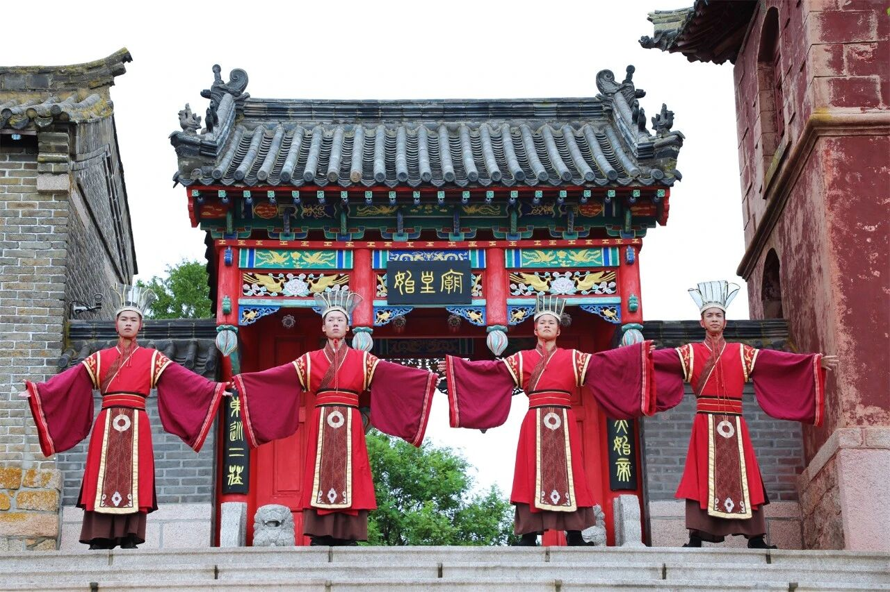
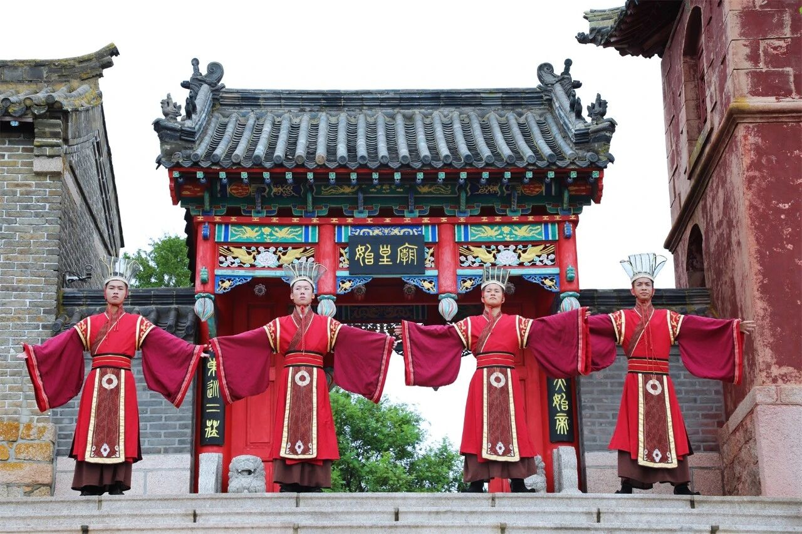

“朝舞”说法来源多样，一说源自《孟子正义》，被解释为“朝日乐舞之地”，就是说这里风光秀美，人烟阜盛，连朝日都不愿意离去并为之且蹈且舞。但该说法极为牵强，属实是望文生义，意思不达。
还有一种说法偏向直译，朝是礼拜，朝拜的意思，乐是指乐器、乐曲，舞，即歌舞、舞蹈。古藉记，“天子常春分朝日觐，礼日拜日东门之外，大司乐乃奏《黄钟》、歌《大吕》，舞《云门》以祀天神。
《山东通志》解释其为人们对太阳神的原始崇拜，“朝日乐舞”乃是礼日祭典中的仪式，“朝舞之地”因而就是举办祭拜太阳仪式的地方。其中，大多数人认可“朝舞”一词是由礼拜太阳而来。
其实，在词义方面就可以窥见，“朝舞”的“朝”有两个音，有人念作zhao，有人认作chao，若为前者，则可意译为日出而舞；若为后者，则为向日而舞，表达出的对日神的崇拜与虔敬之情，与祭祀活动相应。

 
